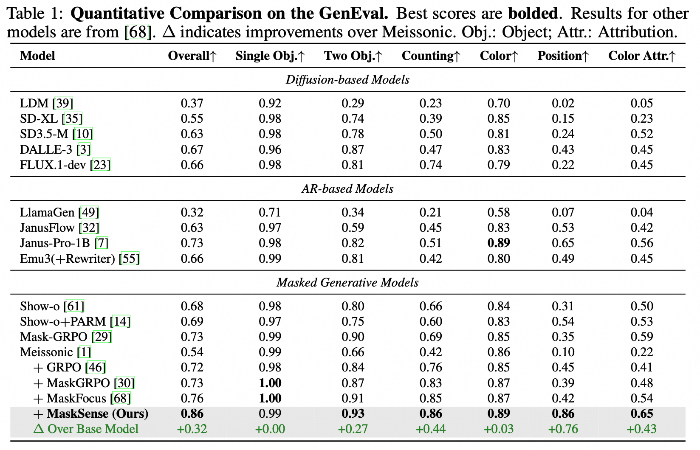
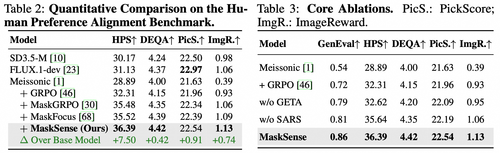
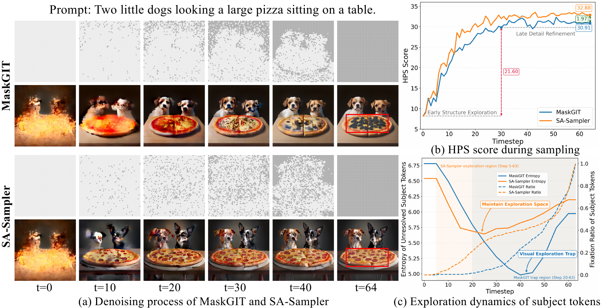
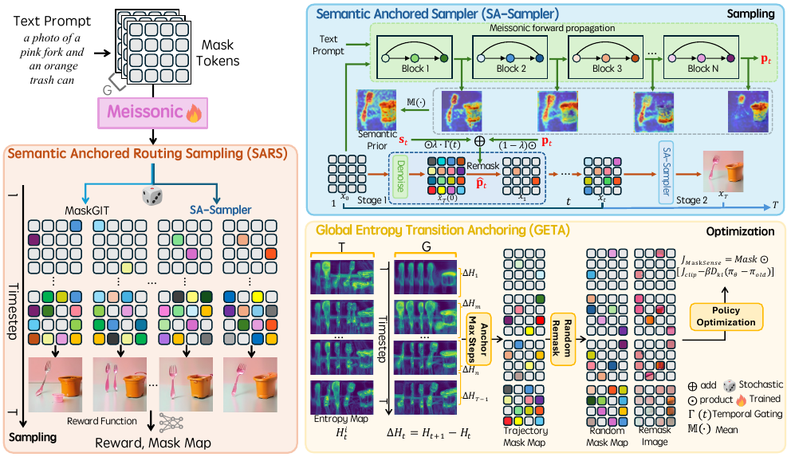
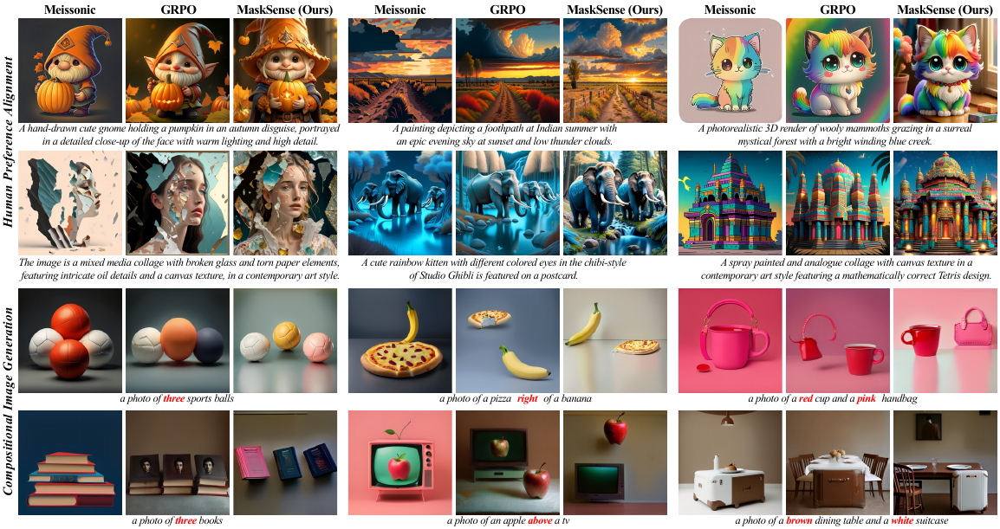
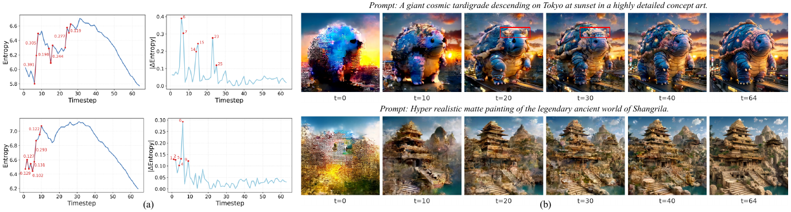

Main Results



Comparison of Training Dynamics Curves. Fig. (a) to (c) refer to the tasks of compositional image generation, human preference alignment, and multi-reward optimization, respectively.
Reinforcement learning (RL) has shown strong potential for aligning generative models with human intent, but adapting RL to masked generative models (MGMs) remains largely underexplored. Existing approaches that directly adapt Group Relative Policy Optimization (GRPO) to MGMs leave a foundational conflict unaddressed: MGMs' exploitative decoding nature is inherently at odds with the exploratory diversity that GRPO presupposes. In this work, we reveal a structural decoding bias termed the visual exploration trap: confidence-based sampling trades the exploration of diverse subject realizations for the greedy resolution of low-uncertainty background regions, causing premature collapse of the generative exploration space and starving GRPO of the rollout diversity it depends on. To this end, we propose MaskSense, a novel RL framework for MGMs that confronts the visual exploration trap at both the sampling and optimization stages. Specifically, we introduce a semantic anchored routing sampling mechanism that leverages semantic priors to preserve high-entropy subject token exploration while amplifying intra-group reward variance through exploratory-exploitative routing to yield more discriminative advantage estimates. Furthermore, we design a global entropy transition anchoring strategy to identify the most consequential decoding steps and concentrate gradient updates on them. Extensive experiments on multiple text-to-image benchmarks demonstrate that MaskSense substantially improves upon the base model, with GenEval accuracy improving from 54% to 86% and HPS from 28.89 to 36.39, achieving state-of-the-art performance.

Motivation. (a) MaskGIT keeps subject tokens masked while committing background regions early, whereas SA-Sampler resolves subject regions earlier via semantic anchoring. (b) SA-Sampler consistently discovers higher-reward trajectories through broader generative exploration. (c) SA-Sampler maintains higher subject-token fixation ratios and elevated entropy, effectively escaping the visual exploration trap.

Overview of MaskSense. MaskSense comprises two core modules that jointly address the visual exploration trap. At the sampling stage, SARS promotes subject-token exploration via semantic anchored decoding and sharpens advantage estimation through dual-branch rollout routing. At the optimization stage, GETA concentrates GRPO updates on critical decoding steps anchored by entropy transitions, with random remasking applied to ensure optimization diversity.


Comparison of Training Dynamics Curves. Fig. (a) to (c) refer to the tasks of compositional image generation, human preference alignment, and multi-reward optimization, respectively.


Ablation Analysis on Key Strategy Choices. (a) SARS effectively balances exploration and exploitation, outperforming single-branch sampling strategies. (b) GETA anchors critical decision steps, enabling more principled policy optimization than heuristic alternatives. (c) Random remasking diversifies anchor states, producing more stable optimization.

Anchored Timesteps of Diverse Prompts. (a) Global entropy and absolute entropy difference between consecutive timesteps. (b) Visualization of generation process across timesteps.
@inproceedings{MaskSense,
title={MaskSense: Confronting the Visual Exploration Trap in Masked Image Generation},
author={Yawen Shao and Jie Xiao and Kai Zhu and Yu Liu and Hongchen Luo and Xueyang Fu and Yang Cao and Wei Zhai and Zheng-Jun Zha},
booktitle={Advances in Neural Information Processing Systems (NeurIPS)},
year={2026}
}